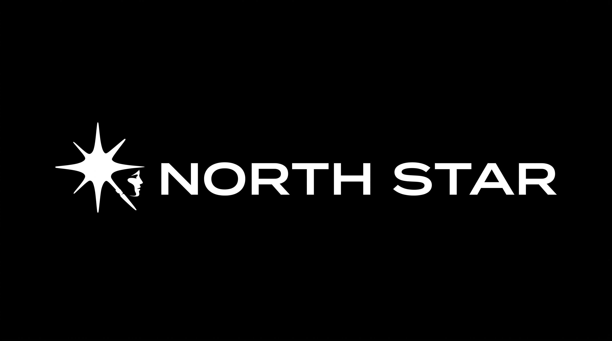
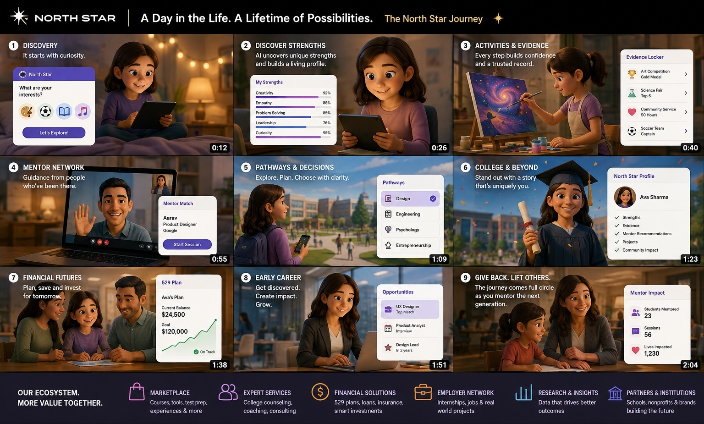
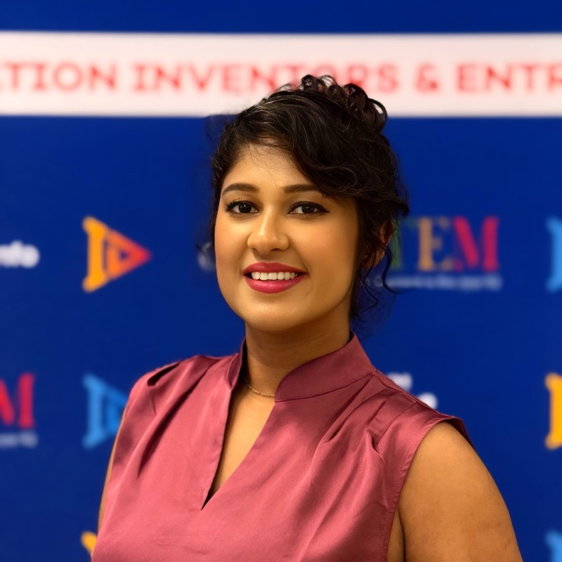
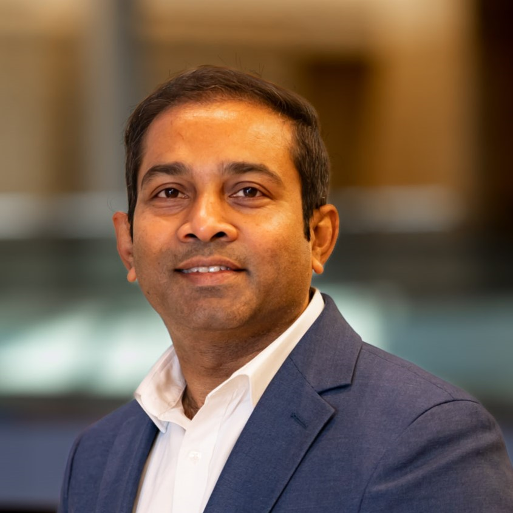

Understand the whole child
Parent input, child voice, strengths, interests, academics, experiences and evidence.

Join Early AccessPROJECT NORTH STAR
North Star builds a living understanding of each child — connecting strengths, interests, goals, evidence and family context to the right next action and the right human guidance.
Join Early AccessTHE GAP
Grades live in one place. Interests in another. Activities, aspirations, advice and opportunities are scattered across years and people. North Star turns those disconnected signals into one evolving journey.
Parent input, child voice, strengths, interests, academics, experiences and evidence.
Explore goals that fit the child and see what each path requires.
Translate long-term goals into practical actions for today, this week and beyond.
Connect guides, coaches, mentors and inspiring experts when human experience matters.
A DAY IN THE LIFE. A LIFETIME OF POSSIBILITIES.
Maya's interests may change. Her goals may evolve. North Star evolves with her — from early discovery to education, career and eventually giving back.

The child is the hero. North Star is the intelligence and guidance surrounding the child.
CHILD INTELLIGENCE
North Star continuously connects what a child says, does, learns, enjoys, struggles with and aspires to become — so recommendations evolve as the child does.
North Star connects Maya's aspiration to the skills and experiences that move it forward.
Strengthen algebra foundations • Join a robotics project • Match with a focused coach
THE TEAM
Vision • AI • Scale • GTM
AI-first platforms • Scale

Neuroscience • Product

Architecture • Data • AI
AI • Technology
North Star helps families discover a child's interests, strengths, growth areas and meaningful goals—then turns those insights into milestones and next-best actions. As the child progresses, North Star identifies gaps and challenges, adapts the path, and connects the child with relevant people and communities.
Strengths, interests, growth areas and possible goals.
Goals become milestones, skills and daily actions.
Spot progression gaps early and adjust the journey.
Find the right human support and communities.
North Star can match support to a child's age, goals, interests, needs and stage of the journey.
Near-peer support from someone a few steps ahead.
Structured help for skills, academics and milestones.
Longer-term perspective from experienced people.
People and stories that expand what a child can imagine.
Discover communities around interests, goals, skills and pathways—from STEM and entrepreneurship to arts, athletics and emerging careers. Recommendations can evolve as the child's interests and goals change.
Join as a parent or guardian, a young person age 14+, or as part of the North Star human network.
Your form is ready; submission storage can be connected when the live registration service is selected.